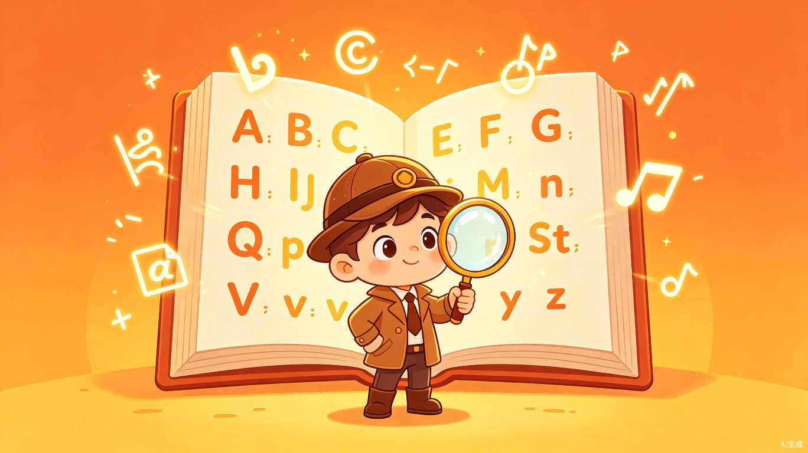
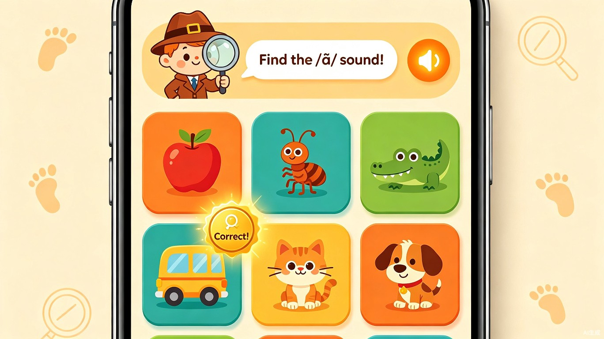
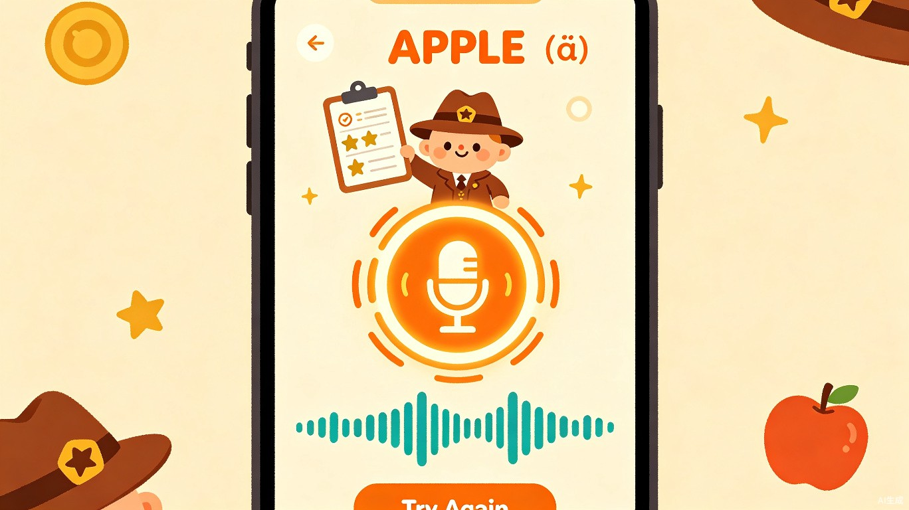
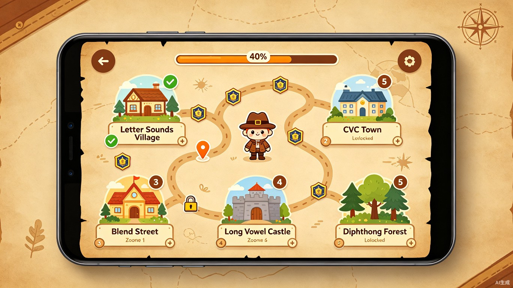
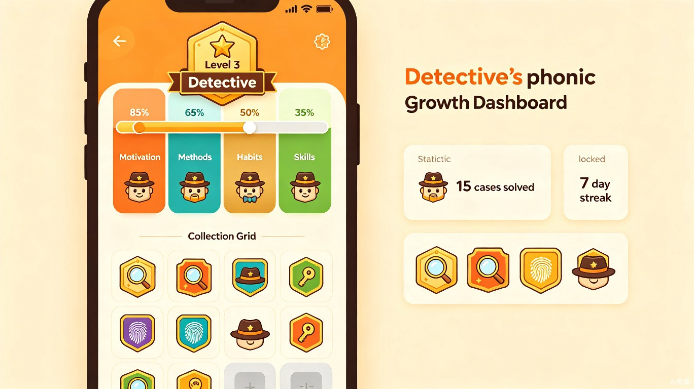

AI Phonics Detective
参赛提交版6-10 岁小学生在自然拼读学习中缺乏动力和即时反馈——课堂以"跟读+抄写"为主，孩子觉得枯燥；家长无法判断发音是否准确；课后练习没有系统规划，规则记不住、用不上。
自然拼读的核心逻辑——"听一个音，找对应的东西"——天然就是侦探破案的过程。孩子玩侦探游戏时专注力极高，于是我们把字母组合包装成"破案线索"，让拼读学习变成沉浸式游戏。
一款面向 6-10 岁的微信小程序，以侦探破案为主题包装自然拼读学习，集成 AI 语音评分和关卡式成长体系，单局 3-5 分钟，随时随地边玩边学。
四大交互模块，覆盖听、说、学、练完整学习闭环

AI 播放一个发音（如 /æ/），屏幕展示 6 张图片，孩子找出以该发音开头的图片，找对即"破案成功"。

破案后进入跟读挑战，AI 实时评分（1-3 星），达标获得侦探徽章，未达标可重试并获得改进建议。

学习内容按自然拼读规则设计为 5 大关卡：字母音 → CVC → 辅音组合 → 长元音 → 双元音，每关 5-8 个"案件"。

可视化展示孩子从"激发动力 → 掌握方法 → 养成习惯 → 构建能力"的完整成长路径，家长也能直观了解学习成果。
核心用户：6-10 岁中国小学生（约 7700 万人），处于英语启蒙和自然拼读学习的关键窗口期。
次核心用户：关注孩子英语学习进度的家长，需要了解发音准确度和学习成果的可视化反馈。
碎片化学习：等车、课间、放学后、睡前——小程序打开即玩，3-5 分钟一局，完美适配碎片时间。
家庭陪伴：家长陪同孩子一起"破案"，通过成长面板了解学习进度和发音水平。
如果没有这款产品，用户目前面临以下核心问题：
AI 即时反馈闭环：传统课堂一个老师面对 40+ 学生，无法逐一纠正发音。本产品让每个孩子获得实时评分和改进建议，反馈延迟缩短为零。
碎片化学习：小程序 + 3-5 分钟单局，让孩子在碎片时间有效学习，从被动完成作业转变为多段主动学习。
科学分级体系：按拼读规则循序渐进（字母音→CVC→辅音组合→长元音→双元音），避免一刀切和无效重复。
促进教育公平：用 AI 替代专业教师提供语音评分，让每一个孩子——无论身处一线城市还是县城——都能获得高质量的拼读学习资源。
降低辅导焦虑：成长面板让家长直观了解孩子的学习进度和发音水平，从焦虑驱动变为数据驱动。
培养学习兴趣：游戏化叙事让孩子在快乐中建立对英语学习的正向情感，影响远超拼读技能本身。